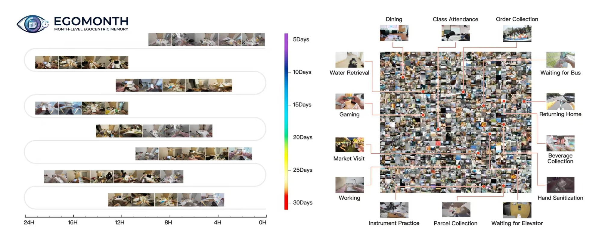
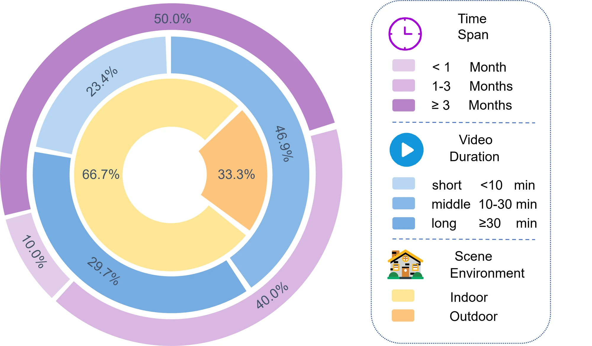
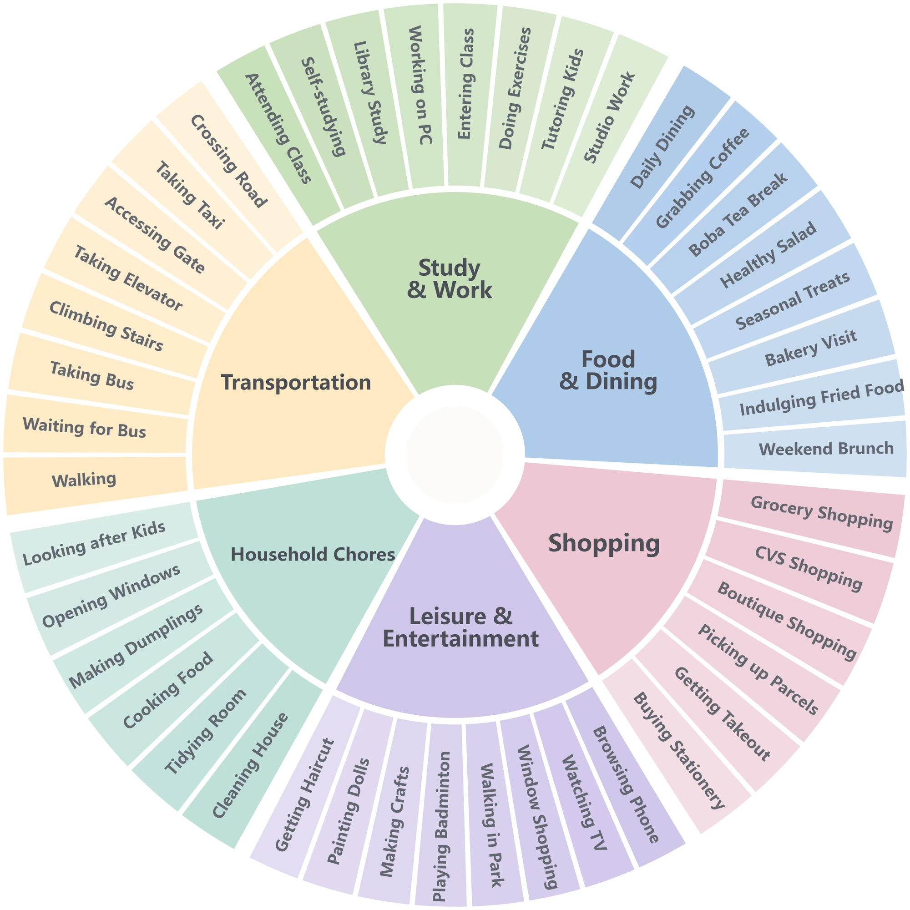
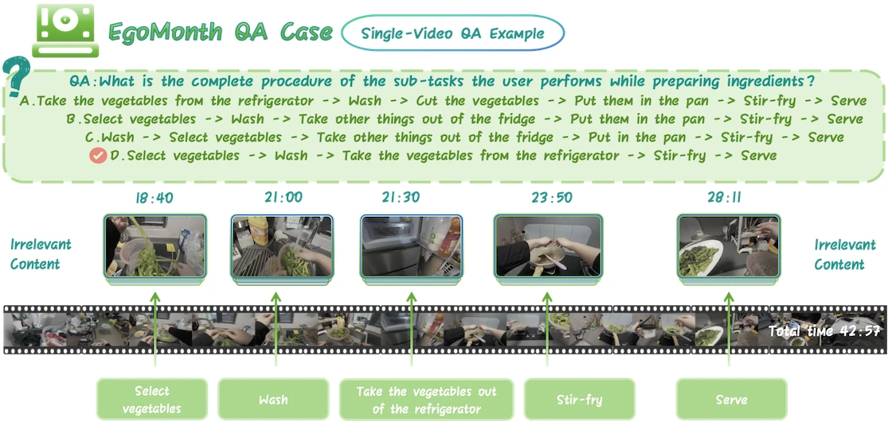
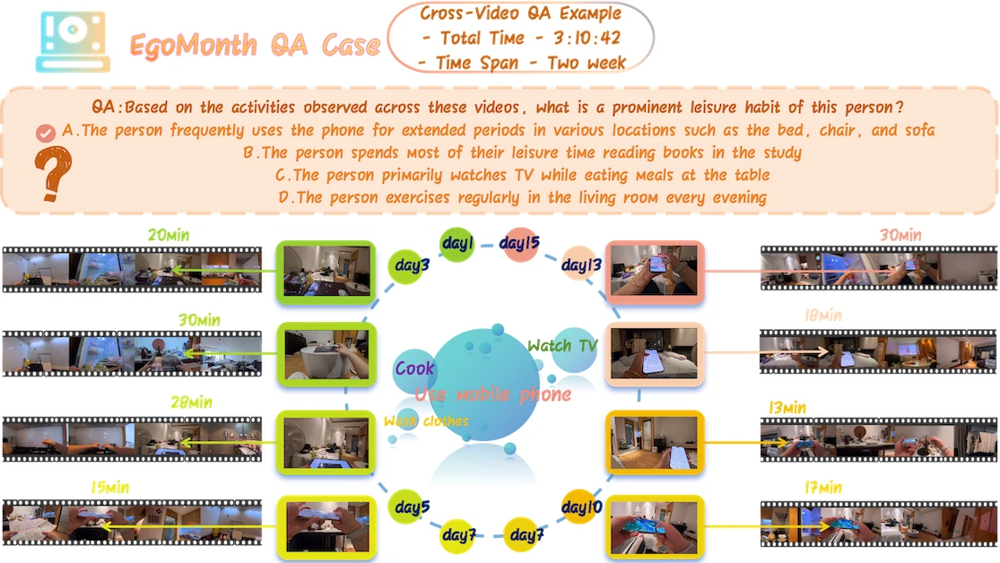
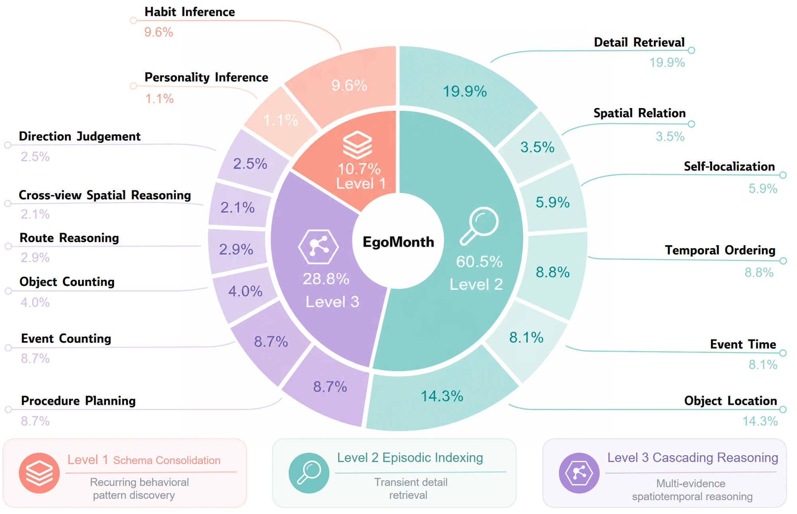

Record daily life
Smartphones and action cameras capture indoor and outdoor activities. The retained corpus spans 20 participants and 738 clips.
20–120 days per participant
Preprint · 2026Long-term egocentric memory
What can a model remember after a month of everyday life?
Test how it retains, retrieves, and connects experiences across days.
* Equal contribution · ✉ Corresponding authors: Lanjun Wang, Zili Yi

Remembering a month of daily life means keeping track of recurring places, sparse events, and subtle changes. A useful memory must distinguish what usually happens from what happened at a particular time, then connect observations when a question requires more than one episode.
EgoMonth brings this challenge to first-person video understanding. Its recordings follow independent daily routines across 20–120 days. The benchmark evaluates both questions grounded in a single recording and questions that combine evidence across multiple videos.
Inside the benchmark
The same participant returns to familiar settings over days and weeks, with important evidence scattered among ordinary routines.
Smartphones and action cameras capture indoor and outdoor activities. The retained corpus spans 20 participants and 738 clips.
20–120 days per participant
Screen recordings for quality, viewpoint, and continuity. Anonymize sensitive regions and check the results manually.
18,072 minutes of retained video
Annotators inspect events, object states, and temporal dependencies to write questions with four plausible answer options.
Fully human-written questions
Groups of three reviewers check answer correctness and distractors, revisiting the recordings when they disagree.
1,443 QA pairs across 14 tasks
Recording span describes the interval across days, not uninterrupted 24-hour footage. Average clip length is approximately 24.5 minutes. Dataset construction and statistics.


Questions in context
Two original examples from the paper illustrate the difference between following one activity and finding a pattern across recordings.
Procedure planning · Level 3
The answer depends on the order of several actions. Retrieve the relevant moments in a cooking recording and assemble them into the observed procedure.

Habit inference · Level 1
A single clip cannot establish a persistent routine. Combine observations from multiple recordings to identify the behavior that repeats across different settings.

14 tasks / 3 levels
A progressive hierarchy separates stable behavioral patterns, retrieval of specific episodes, and reasoning that depends on multiple pieces of evidence.
Repeated experiences provide multiple chances to recover a stable pattern. These tasks ask whether a model can infer regularities across weeks of daily life.
Identify routines supported by repeated observations across weeks.
138 questions · 9.6% of benchmarkInfer enduring behavioral traits from the recorded evidence.
16 questions · 1.1% of benchmarkFind a specific detail, place, object state, or point in time. Similar-looking episodes make precise retrieval harder than remembering the general story.
Recall a fine-grained visual detail from a particular episode.
287 questions · 19.9% of benchmarkRecover how objects are positioned relative to one another.
51 questions · 3.5% of benchmarkIdentify the wearer’s location at a specified moment.
85 questions · 5.9% of benchmarkArrange observed events in their correct chronological order.
127 questions · 8.8% of benchmarkLocate when a particular event happened in the recordings.
117 questions · 8.1% of benchmarkRetrieve where an object was last observed.
206 questions · 14.3% of benchmarkCombine multiple retrieved observations into a count, route, procedure, or spatial relation. A missed observation or incorrect intermediate state can change the final answer.
Connect the steps of a multi-stage activity in sequence.
126 questions · 8.7% of benchmarkAccumulate occurrences of an event across the evidence.
125 questions · 8.7% of benchmarkCount object instances over the full video context.
57 questions · 4.0% of benchmarkReconstruct a route from successive places and movements.
42 questions · 2.9% of benchmarkRelate spatial evidence across viewpoints and recording days.
30 questions · 2.1% of benchmarkDetermine orientation from the wearer’s changing viewpoint.
36 questions · 2.5% of benchmark
Reported results
Twelve evaluated models, fourteen tasks, and a human reference. Explore overall performance or compare a specific memory skill.
Paper results · Accuracy (%)
Higher is better
Gemini 2.5 Pro: 71.8% · Human reference: 94.2% · Gap: 22.4 percentage points.
All values below reproduce the paper’s Table 3, including its reported aggregate scores and model input configurations.
Scroll sideways to compare all models →
| Task / metric | Chat-UniVi-V1.5 | LLaVA-NeXT-Video | MiniCPM-V 4.5 | Qwen2-VL | Qwen2.5-VL-32B | Qwen3-VL-8B | Qwen3-VL-30B-A3B | ShareGPT4Video | ST-LLM | VideoLLaMA3 | VITA-1.5 | Gemini 2.5 Pro | Human |
|---|---|---|---|---|---|---|---|---|---|---|---|---|---|
| Input frames | 256 | 64 | 256 | 256 | 256 | 256 | 256 | 64 | 256 | 512 | 16 | 1fps | — |
| Parameters | 7B | 7B | 8B | 7B | 32B | 8B | 30B | 8B | — | 7B | 7B | — | — |
| Level 1 · Schema Consolidation | |||||||||||||
| Habit Inference | 58.7 | 72.5 | 82.6 | 75.4 | 81.9 | 75.4 | 81.9 | 50.0 | 65.2 | 69.6 | 78.3 | 84.8 | 97.8 |
| Personality Inference | 50.0 | 62.5 | 68.8 | 56.2 | 62.5 | 68.8 | 37.5 | 50.0 | 56.2 | 50.0 | 56.2 | 81.3 | 93.8 |
| Level 2 · Episodic Indexing | |||||||||||||
| Detail Retrieval | 34.1 | 38.3 | 66.5 | 58.9 | 61.7 | 54.4 | 56.8 | 34.8 | 34.8 | 55.4 | 51.6 | 77.7 | 95.1 |
| Spatial Relation | 56.9 | 49.0 | 58.8 | 54.9 | 56.9 | 51.0 | 51.0 | 51.0 | 49.0 | 49.0 | 54.9 | 86.3 | 94.1 |
| Self-localization | 29.4 | 41.2 | 54.1 | 52.9 | 49.4 | 52.9 | 52.9 | 31.8 | 35.2 | 43.5 | 48.2 | 82.4 | 97.6 |
| Temporal Ordering | 40.9 | 45.7 | 70.1 | 59.8 | 64.6 | 55.9 | 62.2 | 36.2 | 40.1 | 62.2 | 57.5 | 75.6 | 95.3 |
| Event Time | 44.4 | 46.1 | 57.3 | 42.7 | 47.9 | 41.9 | 50.4 | 45.3 | 42.7 | 41.9 | 49.6 | 60.7 | 95.7 |
| Object Location | 51.9 | 50.5 | 61.6 | 61.6 | 64.1 | 55.3 | 57.3 | 44.7 | 58.2 | 54.9 | 51.5 | 67.0 | 96.1 |
| Level 3 · Cascading Reasoning | |||||||||||||
| Procedure Planning | 46.0 | 29.4 | 68.2 | 68.2 | 78.6 | 71.4 | 70.6 | 30.2 | 46.0 | 60.3 | 66.7 | 81.7 | 94.4 |
| Event Counting | 8.8 | 16.8 | 40.0 | 36.8 | 43.2 | 38.4 | 34.4 | 16.8 | 8.0 | 40.8 | 41.6 | 52.0 | 94.4 |
| Object Counting | 33.3 | 29.8 | 38.6 | 52.6 | 50.9 | 31.6 | 47.4 | 29.8 | 31.6 | 49.1 | 40.4 | 73.7 | 94.7 |
| Route Reasoning | 35.7 | 23.8 | 35.7 | 52.4 | 52.4 | 28.6 | 45.2 | 30.9 | 28.6 | 45.2 | 40.5 | 64.3 | 90.5 |
| Cross-view Spatial Reasoning | 23.3 | 30.0 | 43.3 | 40.0 | 50.0 | 46.7 | 46.7 | 26.7 | 20.0 | 40.0 | 33.3 | 60.0 | 93.3 |
| Direction Judgement | 38.9 | 33.3 | 38.9 | 50.0 | 47.2 | 47.2 | 47.2 | 41.7 | 27.8 | 41.7 | 47.2 | 58.3 | 86.1 |
| Avg · macro | 39.5 | 40.6 | 56.0 | 54.5 | 58.0 | 51.4 | 53.0 | 37.1 | 38.8 | 50.3 | 51.3 | 71.8 | 94.2 |
| Acc · micro | 39.9 | 41.7 | 60.6 | 57.0 | 60.8 | 53.7 | 56.7 | 36.9 | 40.8 | 53.1 | 53.6 | 72.6 | 95.1 |
Source: Table 3, arXiv v1. Models use different input budgets, following their evaluation configurations; this is not a controlled comparison at a shared frame budget. Avg is the reported macro-average across tasks; Acc is accuracy across all questions.
Outputs are compared directly with the reference answers; no LLM judge is used. Four-option questions have a 25% chance baseline. The paper evaluates each model in a single pass without ensembling.
Three trained annotators, independent of QA creation, answer the full benchmark with unrestricted viewing and replay. Their reported average is 94.2% macro and 95.1% micro, with Fleiss’ κ = 0.78.
What the benchmark reveals
The reported results point to weaknesses in keeping time, counting events, and joining spatial evidence over long contexts.
On Event Time, Gemini 2.5 Pro scores 60.7%, compared with 95.7% for humans. Remembering the event’s general meaning does not guarantee a correct temporal index.
Event Counting reaches 52.0% for Gemini 2.5 Pro versus 94.4% for humans. Multiple open-source models fall below the 25% chance baseline.
Cross-view Spatial Reasoning reaches 60.0% for Gemini 2.5 Pro versus 93.3% for humans. Stable spatial relationships remain difficult across changing observations.
Gaps above are percentage-point differences calculated from Table 3. The interpretation follows the paper’s analysis.
Use EgoMonth
The paper describes a research-only access policy for the benchmark. Metadata and QA pairs can be shared for research; raw videos require additional approval. Contact the authors about availability and access. Redistribution and commercial use are prohibited under the policy described in the paper.
Reference
arXiv:2608.13113 · 2026 preprint. The linked PDF includes the full paper and appendices.
@misc{chen2026egomonth,
title = {EgoMonth: A Month-Level Egocentric Video Benchmark for Long-Term Spatiotemporal Memory},
author = {Chen, Weitao and Hu, Jiaxin and Xie, Tianyidan and Li, Yang and Qian, Yuyi and Xu, Banghao and Tang, Ziheng and Wang, Shenyi and Yu, Mingyue and Li, Duo and Shi, Jiacheng and Wang, Gao and Xu, Zhan and Qiu, Zhicheng and Li, Xuanfu and Yang, Jian and Wang, Lanjun and Yi, Zili},
year = {2026},
eprint = {2608.13113},
archivePrefix = {arXiv},
primaryClass = {cs.CV},
doi = {10.48550/arXiv.2608.13113},
url = {https://arxiv.org/abs/2608.13113}
}